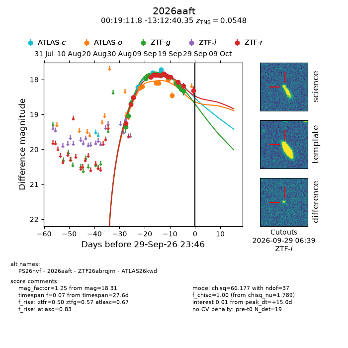
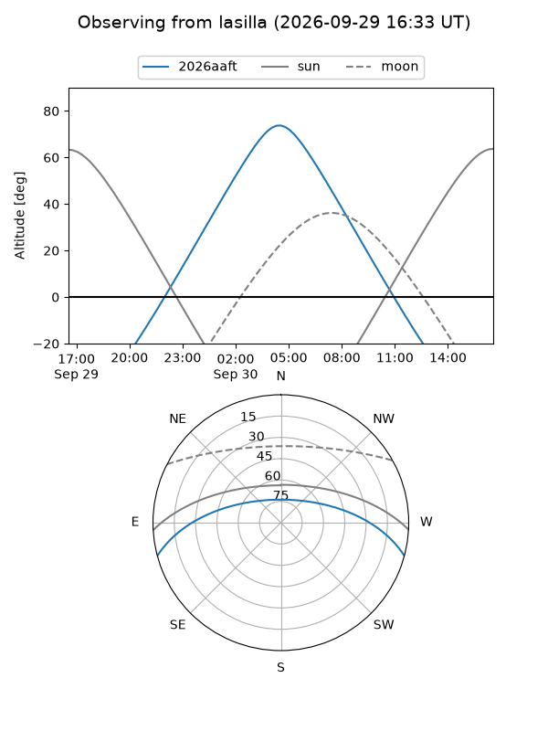
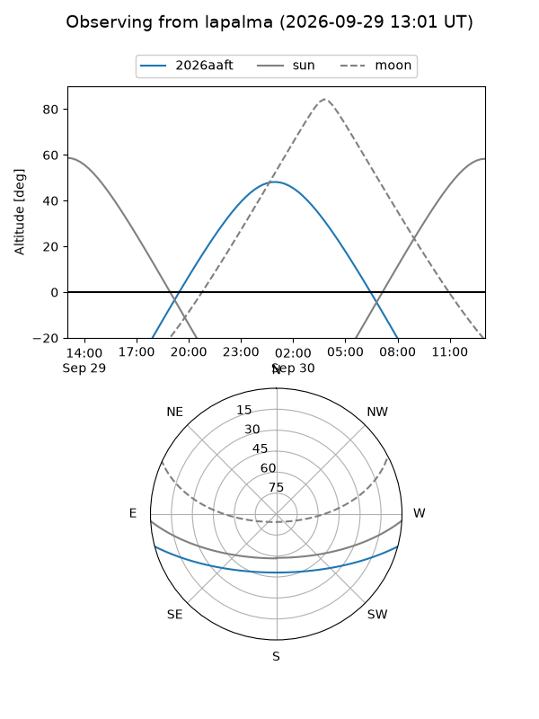
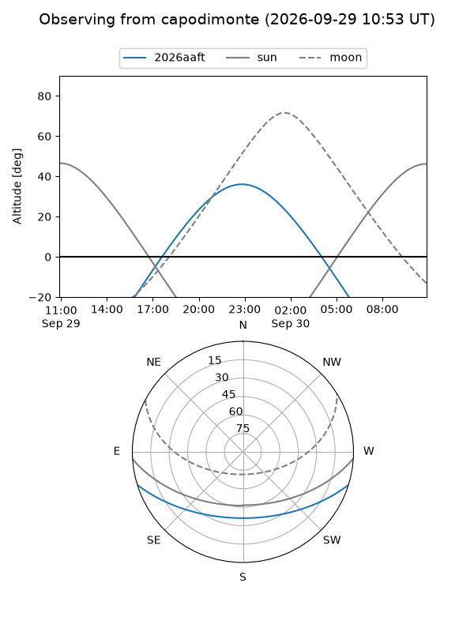
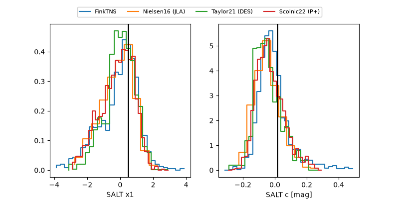

2026aaft
Target 2026aaft at 2026-09-29 23:48
Aliases and brokers:
FINK-ZTF: ztf.fink-portal.org/ZTF26abrqjrn
Lasair-ZTF: lasair-ztf.lsst.ac.uk/objects/ZTF26abrqjrn
ALeRCE-ZTF: alerce.online/object/ZTF26abrqjrn
YSE-PZ: ziggy.ucolick.org/yse/transient_detail/2026aaft
TNS name: wis-tns.org/object/2026aaft
Direct TNS query: direct search
alt names
ZTF26abrqjrn (ztf,fink_ztf)
2026aaft (tns,yse)
ATLAS26kwd (atlas)
PS26hvf (panstarrs)
Coordinates:
equatorial (ra, dec) = 4.7993,-13.21121
equatorial (HMS+DMS) = 00:19:11.84,-13:12:40.35
galactic (l, b) = (92.9008,-74.17221)
Flags:
TNS type: SN Ia
TNS redshift: 0.0548
peak dt: +15.0
Photometry:
last atlasc=17.72, atlaso=18.08, ztfg=18.33, ztfr=18.31
4 atlasc, 7 atlaso, 15 ztfg, 15 ztfr detections
Lightcurve

Visibility



Additional plots
